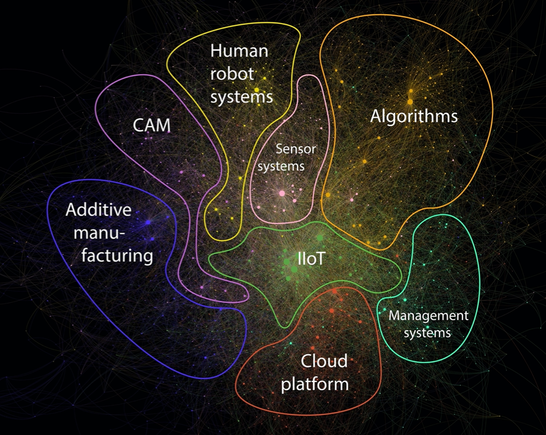

The following provides an overview of the research projects I conducted during my PHD.
Exposure of occupations to technologies of the fourth industrial revolution.
Research project to describe the relation of technologies of the fourth industrial evolution and jobs. We use natural language processing to link patents to task descriptions and create 4IR exposure scores at an occupation and task level.
The four smarts of Industry 4.0: Evolution of ten years of research and future perspectives.
Reviewing 10 years of Industry 4.0 research along the four smarts framework by Frank et al. (2019) to identify research trends and identify future perspectives.
Mapping Industry 4.0 Technologies: From Cyber-Physical Systems to Artificial Intelligence

This research provides a deep dive into the Industry 4.0 technology landscape. Building on more than 14.000 articles we provide a detailed view of Industry 4.0 technologies, trends, and links between technologies.